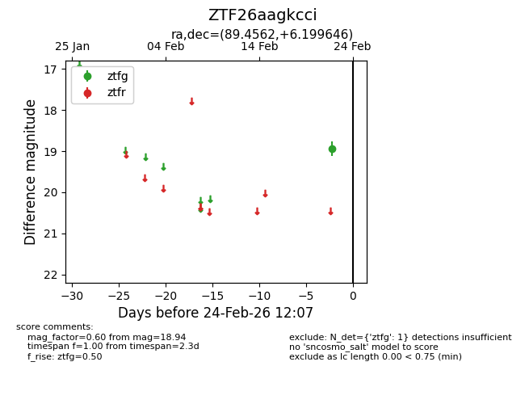
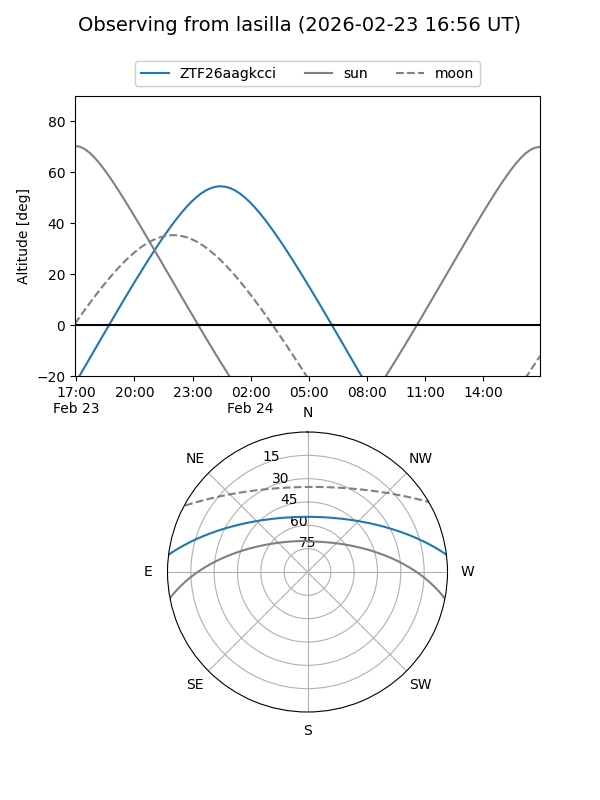
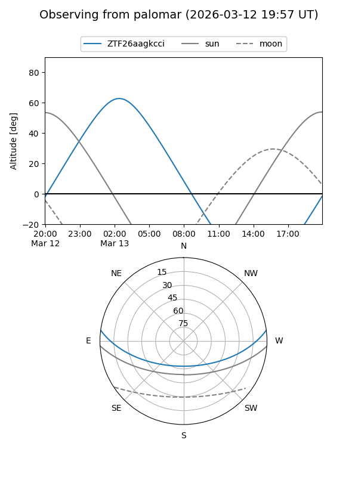

ZTF26aagkcci
Target ZTF26aagkcci at 2026-02-24 12:08
Aliases and brokers:
FINK: link
Lasair: link
ALeRCE: link
alt names
ZTF26aagkcci (ztf,fink_ztf)
Coordinates:
equatorial (ra, dec) = 89.4562,+6.19965
equatorial (HMS+DMS) = 05:57:49.50,+06:11:58.73
galactic (l, b) = (201.1796,-8.96622)
Flags:
Photometry:
last ztfg=18.94
1 ztfg detections
Lightcurve

Visibility


Additional plots